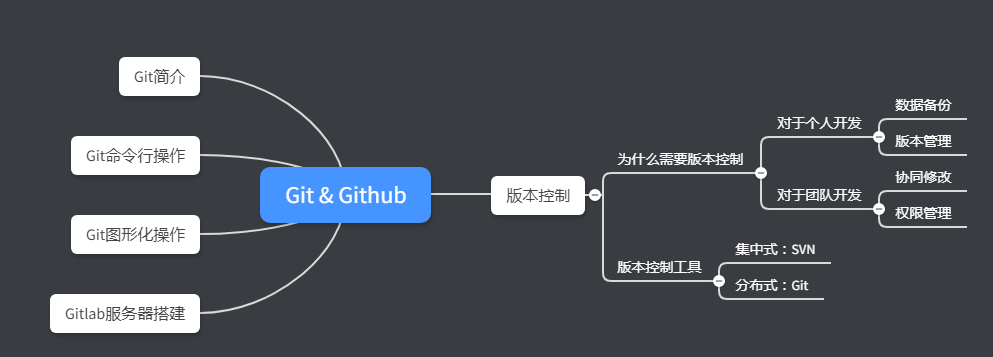
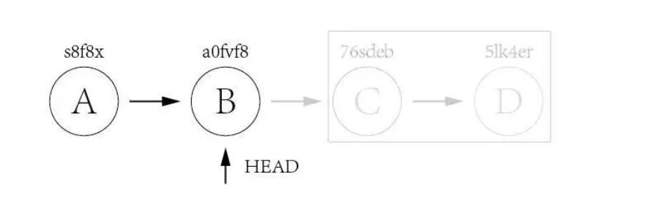
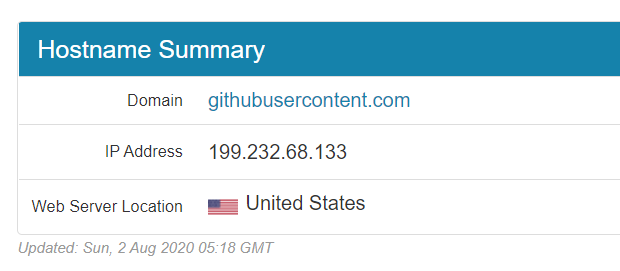
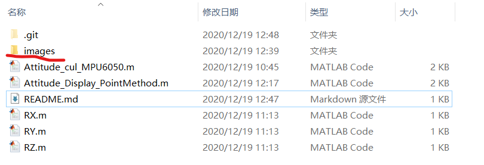
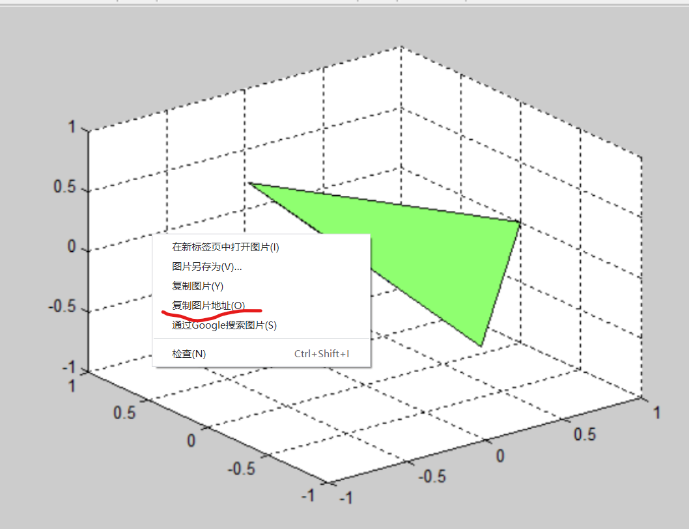

1.Git 版本控制软件Git介绍¶
版本控制有什么用¶
- 提高代码重用性
比如其中的01-bsp_uart_tx文件夹，实现了串口发送的独立功能，当下次项目中需要时，可以直接拷贝过去而无需重写；
- 方便版本回退（重点）
当编写第三个功能03-adc0832+uart+oled的时候，因为思路不清晰导致代码出错，这个时候如果将新添加的代码都找到删除，工作量非常大，而且效率极低，有了版本控制，我们可以直接在02-adc0832+uart的基础上重新编写；
在公板上验证程序无误后，便可以转入硬件开发：设计原理图，绘制PCB，生产焊接调试等工作（电路图也能够版本控制，在后面的文章中介绍）
为什么需要版本控制工具¶
在上一节中我们通过多个文件夹的方式手动实现了版本控制，但是该方式也有一个非常大的缺点：
- 迭代建立文件夹，重复内容多；
- 版本迭代时修改的内容无法查看；
为了解决这一问题，诞生的主流的版本控制软件：
- 集中式版本控制工具：SVN
- 分布式版本控制工具：Git
使用版本控制软件可以解决这一大问题并且带来许多其他的优点，诸如：
- 保存了数据当前状态以及之前每一个提交的历史状态，可以回退到任意一个版本节点；
- 在保存每一个版本的文件信息时不重复保存数据，节约存储空间，提高运行效率；
- 可以清楚到看到不同版本间修改的内容；
- 可以多人协作，团队开发；

本文为摘录：来自
————————————————
版权声明：本文为CSDN博主「Mculover666」的原创文章，遵循 CC 4.0 BY-SA 版权协议，转载请附上原文出处链接及本声明。 原文链接
2.Git的使用1——本地仓库的操作¶
Note
这里以windows下的git bash使用为例，其他平台指令完全一样
Git bash的使用步骤¶
- cd到目录并初始化
1 | git init |
- 将所有文件添加到管理之中
1 | git add -A |
这里的-A也可用--all替换，表示全部文件之意
- 首次提交或是修改完后提交先查看修改再提交
1 2 3 4 5 6 7 8 9 10 11 | $ git diff diff --git a/docs/tutorial/Git/use of git.md b/docs/tutorial/Git/use of git.md index e69de29..de29587 100644 --- a/docs/tutorial/Git/use of git.md +++ b/docs/tutorial/Git/use of git.md @@ -0,0 +1,4 @@ +# Git的使用 + +!!! note + 这里以windows下的git bash使用为例，其他平台指令完全一样 \ No newline at end of file |
Note
这里的git diff命令，在修改较多的情况下推荐使用以下命令(避免查看太多信息)：
1 | git status |
再使用git commit
1 | git commit -am "这是一次关于xxx的修改" |
Note
这里的-a参数表示所有文件，-m参数表示提交信息（massage）
-
-m是推荐必须的参数，因为这关乎版本管理中的回退版本操作，这一信息会与之前版本一并显示
-
每次修改之后，都要使用以下命令将修改放入暂存区，再进行commit
1 | git add * |
版本回退步骤¶
1.git reset命令（重置）
1 | git reset a0fvf8 #版本重置，HEAD指向这一版本
|

2.git revert命令（回退）
1 | git revert 5lk4er git revert 76sdeb #版本回退，HEAD指向这个版本上一个
|
REFERENCE 参考文献¶
APPENDIX 附录¶
All the coding in this document is Available on the Github.
TTECH SUPPORT 技术支持¶
3.Git的使用2——远程仓库Github¶
GitHub——全球最大同性交友网站（狗头），我们这里主要使用它的代码托管功能。需要说明的是，GitHub并不是唯一的选择，你甚至可以自己搭建一个远程git仓库，如在docker中部署gitlab就是一个较为简单的选择。
没有远程仓库的git是没有灵魂的。如果只是在一个仓库里管理文件历史，Git和SVN真没啥区别。为了保证你现在所学的Git物超所值，将来绝对不会后悔（为了打击已经不幸学了SVN的童鞋）,现在介绍git的另一大功能——远程仓库。
简单体验¶
首先体验一下最简单的从github拉取到本地——从远程库克隆：打开git bash后键入以下命令：
1 | git clone https://github.com/Ray005/eleasysite.git |
这是使用http的方式拉取，不需要密钥，下面使用的推送则基于SSH协议，稍微复杂一些：
步骤¶
在继续阅读后续内容前，请自行注册GitHub账号
第一步：创建SSH Key¶
在文件夹中右键，选择“Git Bash Here”按钮，输入以下命令以SSH密钥，注意要替换成你的邮件地址（虽然不换也问题不大）：
1 | ssh-keygen -t rsa -C "youremail@example.com"
|
然后一路回车，也就是使用默认参数的意思。在C:\Users\用户名\.ssh文件夹里找到两个文件：id_rsa和id_rsa.pub两个文件，这两个就是SSH Key的秘钥对
- id_rsa是私钥，不能泄露出去
- id_rsa.pub是公钥，可以放心地告诉任何人。
第二步：在GitHub上添加公钥¶
登陆GitHub，右上角箭头中依次打开“Account settings”，“SSH Keys”页面：
然后，点“Add SSH Key”，填上任意Title，在Key文本框里粘贴id_rsa.pub文件内容,这需要在上一步所说的路径中，找到公钥文件，使用文本编辑器打开（如VScode，甚至windows自带的记事本也可以）：
Question
为什么GitHub需要SSH Key呢？因为GitHub需要识别出你推送的提交确实是你推送的，而不是别人冒充的，而Git支持SSH协议，所以，GitHub只要知道了你的公钥，就可以确认只有你自己才能推送。当然，GitHub允许你添加多个Key。假定你有若干电脑，你一会儿在公司提交，一会儿在家里提交，只要把每台电脑的Key都添加到GitHub，就可以在每台电脑上往GitHub推送了。
Note
友情提示，在GitHub上免费托管的Git仓库，任何人都可以看到喔（但只有你自己才能改）。所以，不要把敏感信息放进去。
第三步：创建Github远程库并从本地推送¶
现在的情景是，你已经在本地创建了一个Git仓库后，又想在GitHub创建一个Git仓库，并且让这两个仓库进行远程同步，
首先需要知道几个词： * Repository:储存库 * origin：远程库的默认名称，让人一看就知道是远程库 * master：主分支，与之对应的是branch，分支
在github上创建好储存库（Repository）后，需要关联一下本地库与远程库，在本地的bash中输入：
1 | git remote add origin git@github.com:ray005/example.git |
这里要替换两处： * ray005是我的github ID，换成你注册是的用户名即可 * example.git这是储存库的名字，换成你刚才创建的即可
接下来可以推送了,-u参数在之后不用了，因为它是关联本地与远程库的参数：
1 | git push -u origin master |
至此，恭喜你，你已经拥有一个远程仓库并可以与GitHub上成千上万的程序猿/媛以代码方式交流了！
首次推送会收到警告，回答yes即可，这样等于信任了这个“github”是你真正要推送的目标，如果害怕有人伪装成github，可以验证一下那一串字符。
小结¶
ssh-keygen -t rsa -C "youremail@example.com" 生成本机密钥（公钥要上传到github）
git remote add origin git@github.com:ray005/example.git 要关联一个远程库，使用该命令
git push -u origin master 推送命令：-u参数是第一次推送时才用。表示推送到origin远程库的master分支，之后就默认使用这个分支了
REFERENCE 参考文献¶
APPENDIX 附录¶
All the coding in this document is Available on the Github.
TTECH SUPPORT 技术支持¶
4.使用V2Ray或SSR代理git¶
使用V2Ray或SSR均可为git代理，关键是在gitbash中设置代理地址，注意找到代理的本地端口号
* V2Ray 默认10808
* SS/SSR 默认1080
* 佛跳墙 在设置中查看,如19181
问答：¶
-
你正在使用哪个版本的 V2Ray？（如果服务器和客户端使用了不同版本，请注明）
- 3.29
-
你的使用场景是什么？
- 比如使用 Chrome 通过 Socks/* VMess 代理观看 YouTube 视频。
-
系统代理代理git client;
- 为git设置代理命令
1 2 3 4 | git config --global https.proxy http://127.0.0.1:1080 git config --global https.proxy https://127.0.0.1:1080 git config --global http.proxy 'socks5://127.0.0.1:1080' git config --global https.proxy 'socks5://127.0.0.1:1080' |
- git clone项目
你看到的不正常的现象是什么？（请描述具体现象，比如访问超时，TLS 证书错误等） 无法代理 返回错误日志 使用ss ssr可以正常代理
1 2 3 | 2018/07/10 20:52:29 tcp:127.0.0.1:60854 rejected Proxy|Socks: unknown Socks version: 67 2018/07/10 20:53:09 tcp:127.0.0.1:60858 rejected Proxy|Socks: unknown Socks version: 67 2018/07/10 20:53:10 tcp:127.0.0.1:60859 rejected Proxy|Socks: unknown Socks version: 67 |
- 你期待看到的正确表现是怎样的？
- 正常代理git下载请求
取消代理¶
1 2 | git config --global --unset http.proxy git config --global --unset https.prox |
REFERENCE¶
Github Loked issue:无法代理git ＃1190 on 10 Jul 2018 ·6条评论https://github.com/v2ray/v2ray-core/issues/1190
5.git突然无法访问¶
2020.06 github再次被墙。
步骤¶
打开C:\Windows\System32\drivers\etc的host文件，添加如下：
1 2 3 4 5 6 7 8 9 10 11 12 13 14 15 16 17 18 19 20 | 在 C:\Windows\System32\drivers\etc的'host'文件中替换原来的Github解析内容 # GitHub Start 140.82.114.4 github.com 140.82.114.4 gist.github.com 185.199.108.153 assets-cdn.github.com 151.101.64.133 raw.githubusercontent.com 151.101.108.133 gist.githubusercontent.com 151.101.108.133 cloud.githubusercontent.com 151.101.108.133 camo.githubusercontent.com 151.101.108.133 avatars0.githubusercontent.com 151.101.108.133 avatars1.githubusercontent.com 151.101.108.133 avatars2.githubusercontent.com 151.101.108.133 avatars3.githubusercontent.com 151.101.108.133 avatars4.githubusercontent.com 151.101.108.133 avatars5.githubusercontent.com 151.101.108.133 avatars6.githubusercontent.com 151.101.108.133 avatars7.githubusercontent.com 151.101.108.133 avatars8.githubusercontent.com # GitHub End |
其他¶
查询githubusercontent.com的IP地址填入也是可行的点击查询
（这样会导致github.com没法儿ping通，但是git推送下载能够正常使用）

REFERENCE¶
6.Git强制拉取到本地¶
步骤¶
依次执行以下命令
1 2 3 | git fetch --all git reset --hard origin/master git pull |
解释¶
git pull 强制覆盖本地的代码方式，下面是正确的方法：
git fetch --all 然后，你有两个选择：
git reset --hard origin/master 或者如果你在其他分支上：
git reset --hard origin/
git fetch从远程下载最新的，而不尝试合并或rebase任何东西。
然后git reset将主分支重置为您刚刚获取的内容。 --hard选项更改工作树中的所有文件以匹配origin/master中的文件。
在自建工作流中的示例¶
1 2 3 4 5 6 7 8 | cd eleasysite sudo git fetch --all git reset --hard origin/master git pull cd .. sudo rm -r /var/www/html sudo chmod -R 777 eleasysite sudo cp -r eleasysite /var/www/html |
REFERENCE 参考文献¶
7.github储存库Readme中地图片插入¶
步骤¶
1插入图片（最好放置到images文件夹下）¶

2git上直接push上去¶
3在github项目中找到这张图片，右键复制图片地址¶

4在本地readme.md中图片地址改为这个¶
5再次git push上去¶
8远程库改变了_无法push问题：合并后再push¶
解决方案：使用：¶
1 2 | git pull --rebase origin master git push |
注：这样pull不会清除原来的更改，只会合并后再push（已经验证了）
REFERENCE¶
https://blog.csdn.net/rocling/article/details/82956402